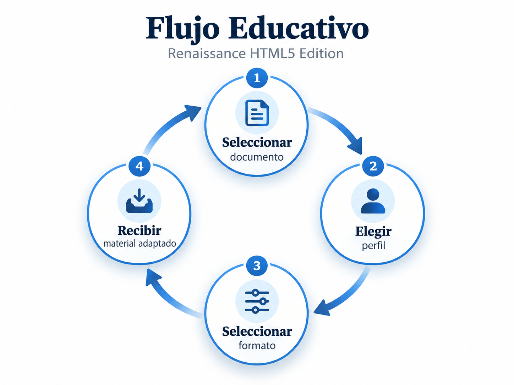

Laboratorio de aprendizaje HTML5
Esta página demuestra el uso práctico de elementos HTML5 semánticos: formularios con validación, tablas accesibles, y elementos multimedia con subtítulos. Todo implementado sin dependencias externas.
Probar el FormularioFormulario de personalización conceptual
Nota: Este formulario es una demostración estructural de las capacidades de HTML5. No envía datos a ningún servidor ni procesa información real. Su propósito es educativo, mostrando el uso correcto de elementos como <form>, <fieldset>, <legend>, <label>, y atributos de validación nativos.
Comparación de formatos pedagógicos
La siguiente tabla muestra una comparación entre los diferentes formatos de aprendizaje disponibles, sus características y casos de uso recomendados.
| Formato | Perfil Recomendado | Duración Típica | Profundidad | Interactividad |
|---|---|---|---|---|
| Tutorial Detallado | Principiante, Junior/Mid | 30-60 min | Alta | Media (Ejercicios guiados) |
| Flashcards | Principiante, Junior/Mid | 10-20 min | Baja (Conceptos clave) | Alta (Auto-evaluación) |
| Resumen Ejecutivo | Ejecutivo, Arquitecto | 5-15 min | Media (Panorama general) | Baja (Solo lectura) |
| Guía Visual | Todos los perfiles | 15-45 min | Variable | Media (Diagramas interactivos) |
| Caso de Estudio | Arquitecto, Junior/Mid | 45-120 min | Muy Alta | Alta (Análisis práctico) |
Recursos multimedia educativos
Esta sección demuestra el uso de elementos multimedia nativos de HTML5 con accesibilidad completa.
Explicación de HTML5 Semántico
Evolución: De NuevaMente a Renaissance HTML5 Edition
Escuche la narración sobre el origen y evolución de esta adaptación académica:
Resumen: Esta narración explica el proceso de adaptación conceptual desde NuevaMente hacia Renaissance HTML5 Edition, detallando cómo se transformó la iniciativa original en una implementación académica enfocada en HTML5 semántico para cumplir con los requisitos de la E-Actividad 2.1 de la Universidad Valle del Momboy.
Video: Flujo de Trabajo Educativo
Observe una animación que explica el flujo de trabajo de Renaissance:
Descripción: Video animado que muestra los cuatro pasos del proceso: 1) Seleccionar documento, 2) Elegir perfil, 3) Seleccionar formato, 4) Recibir material adaptado. Incluye narración y subtítulos en español.
Diagrama visual del proceso

Preguntas frecuentes
Consulte nuestras preguntas frecuentes sobre el uso de HTML5 en este proyecto:
¿Por qué es importante usar HTML5 semántico?
El HTML5 semántico mejora la accesibilidad para usuarios con discapacidades que utilizan tecnologías asistivas como lectores de pantalla. Además, ayuda a los motores de búsqueda a entender mejor la estructura y el contenido de tu página, mejorando el SEO. También hace que el código sea más legible y mantenible para otros desarrolladores.
¿Qué elementos semánticos de HTML5 se utilizan en este proyecto?
Este proyecto utiliza: <header>, <nav>,
<main>, <article>, <section>,
<footer>, <figure>, <figcaption>,
<form>, <fieldset>, <legend>,
<table>, <caption>, <thead>,
<tbody>, <th>, <audio>,
<video>, <track>, <details>,
y <summary>.
¿Cómo se asegura la accesibilidad en este proyecto?
La accesibilidad se garantiza mediante:
- Uso de elementos semánticos HTML5
- Atributos
aria-apropiados - Textos alternativos (
alt) en imágenes - Etiquetas (
label) asociadas a todos los controles de formulario - Estructura de tablas con
scope,caption,thead,tbody - Subtítulos y transcripciones para multimedia
- Colores con contraste adecuado (WCAG AA/AAA)
- Navegación por teclado completa
- Estados de foco visibles
¿Este proyecto usa JavaScript o frameworks?
No. Este es un proyecto 100% estático basado exclusivamente
en HTML5 y CSS3. No utiliza JavaScript (excepto el mínimo necesario para el
atribulo onsubmit preventDefault en el formulario demostrativo),
ni frameworks como React, Vue, Angular, Bootstrap, Tailwind u otros.
El objetivo es demostrar las capacidades nativas del navegador sin
dependencias externas.
¿Puedo usar este proyecto como plantilla?
Sí, puedes usar este proyecto como referencia para tus propios trabajos. Sin embargo, recuerda que este es un proyecto académico específico para la E-Actividad 2.1 del curso FrontEndIVIVFI2026C de la UVM. Asegúrate de personalizarlo y adaptarlo a tus necesidades, y de dar el crédito apropiado si reutilizas partes significativas del código.
Regresar al inicio
Si deseas volver a la página principal, haz clic en el siguiente botón.
Volver a Inicio